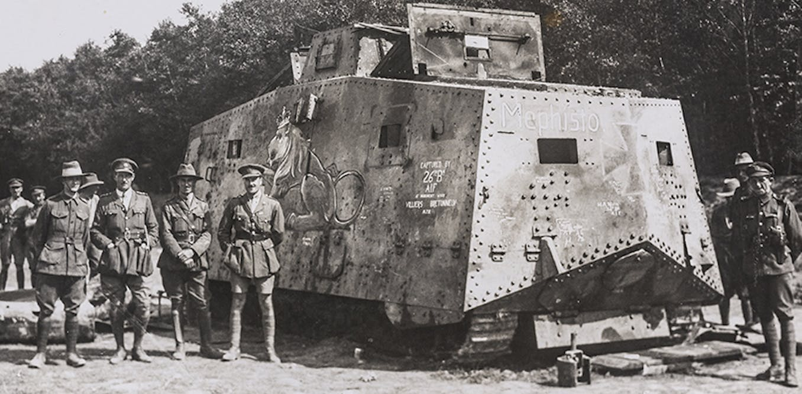

World War 1 Tank Era
A7V

Sturmpanzerwagen A7V merupakan tank pertama buatan Jerman sekaligus satu-satunya tank Jerman yang ikut dalam Perang Dunia I.
A7V diperkenalkan oleh Jerman pada tahun 1918. Seratus sasis diperintahkan dibangun pada awal 1917, tapi hanya 10 yang diselesaikan sebagai tank (kendaraan lapis baja), dan sisanya sebagai pengangkut kargo Überlandwagen. Jumlah yang akan dijadikan tank/kendaraan lapis baja kemudian ditingkatkan menjadi 20 unit. Mereka digunakan dari Maret hingga Oktober 1918 dan merupakan satu-satunya tank yang diproduksi oleh Jerman dalam Perang Dunia I untuk digunakan dalam pertempuran. untuk mengetahui lebih lanjut mengenai tank ini maka tekan disini
World War II
King Tiger

Tiger II adalah sebuah tipe tank berat buatan Jerman pada Perang Dunia II. Kode resmi yang diberikan oleh Jerman ialah Panzerkampfwagen Tiger Ausf. B dan sering disingkat sebagai Tiger B. Kode inventori artilerinya adalah Sd.Kfz. 182. Tank ini juga memiliki julukan informal Königstiger (bahasa Jerman untuk Harimau benggala), sehingga sering disebut sebagai Royal Tiger (Harimau Megah), atau terkadang King Tiger (Raja Harimau) oleh pasukan Sekutu, terutama oleh pasukan Amerika.
Cold War
Leopard A1A1

The Leopard (atau Leopard 1) adalah tank tempur utama dirancang dan diproduksi oleh Porsche di Jerman Barat bahwa layanan pertama kali masuk pada tahun 1965. Dikembangkan di era ketika PANAS hulu ledak yang berpikir untuk membuat baju besi berat konvensional nilai terbatas, Leopard berfokus pada senjata dalam bentuk versi Jerman-dibangun dari British L7 105-mm gun, dan meningkatkan kinerja lintas negara yang tak tertandingi oleh desain lainnya pada zaman tersebut.
Modern Era
Leopard 2A5

Leopard 2 adalah tank tempur utama yang dikembangkan oleh Krauss-Maffei pada tahun 1970-an untuk Tentara Jerman. Tank pertama masuk dinas ketentaraannya pada tahun 1979 dan menggantikan pendahulunya Leopard 1 sebagai tank utama pasukan Jerman Barat. Beberapa versi telah ikut dinas dalam Pasukan Jerman dan 12 negara eropa lainnya, serta beberapa negara luar eropa lainnya. Leopard 2 telah digunakan dalam konflik Kosovo oleh Pasukan Jerman, Konflik Afghanistan oleh Pasukan Denmark dan Kanada, dan Perang Sipil di Suriah oleh Pasukan Turki.